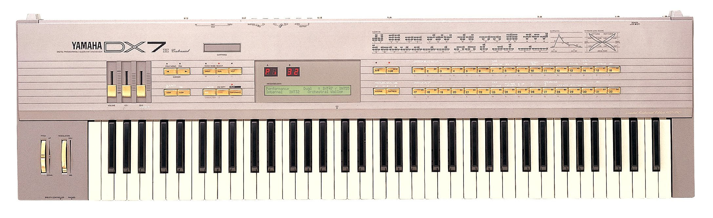

Начало
Несмотря на то, что сам синтезатор вышел в 1983 году, всё началось в 1967 году, когда профессор Оксфордского университета Джон Чоунинг изобрёл новый тип звукого синтеза - FM-синтез. Принцип его работы заключался в наличии 6 генераторов звука (называемых операторами). Некоторые из них использовались как источники звука, остальные же модулировали частоту первых. Говоря простым языком, она то увеличивалась, то уменьшалась (так как волна была синусоидальной). Если наблюдать данный процесс с помощью осциллографа (прибора для исследования электрических колебаний), то можно увидеть, что в некоторых местах волна сжимается, в других - расширяется. Операторы могли быть соединены 32 разными способами (алгоритмами), так что для каждого звука в синтезаторе в итоге имелось 32 вариации.
Запуск
Чоунинг решил предоставить данную технологию компании Yamaha для создания нового синтезатора. Наконец, в 1983 году, Yamaha представили инструмент, совершенно не похожий на всё, что люди привыкли видеть до этого. Управление практически всеми параметрами происходило через кнопки - DX7 был программируемым синтезатором (одним из первых). Его звучание буквально поражало воображение - люди сразу же стали экспериментировать с новыми, свежими звуками. Огромное количество композиций было записано исключительно с использованием DX7 - популярность синтезатора была невероятной.
Закат
В 1987 году было представлено второе поколение DX7 - DX7S, DX7IID и DX7IIFD. Также, к столетней годовщине компании, ограниченным тиражом в 300 копий была выпущена модификация DX7IIFD "Centennial", с серебристым корпусом, золотыми кнопками и увеличенным количеством клавиш (76 вместо 61), которые, кстати, светились в темноте. Несмотря на успех предшественика, модели не приобрели большой популярности. Другие компании быстро заметили появившийся тренд на цифровые синтезаторы, и DX7 был буквально "убит" конкурентами.